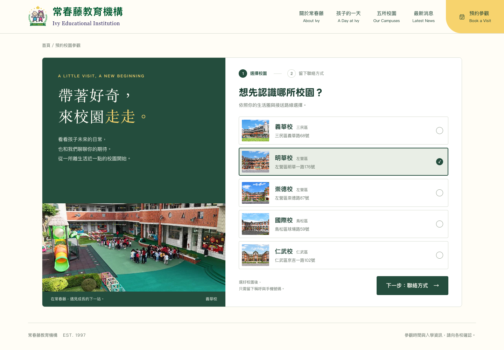
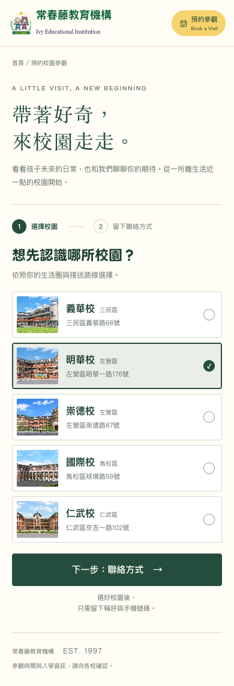
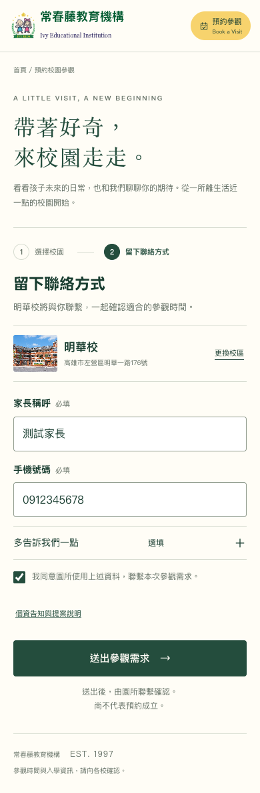
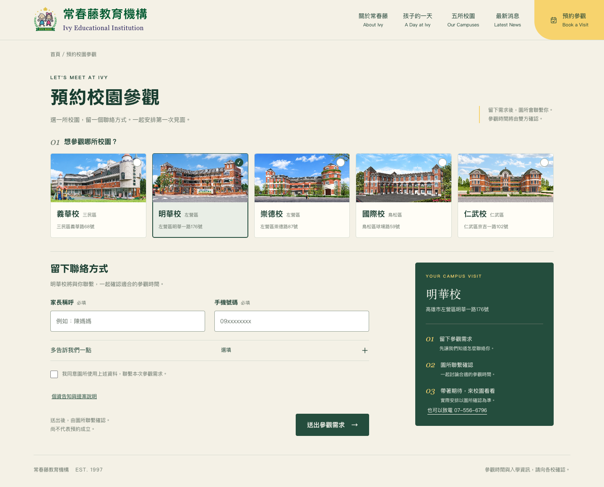
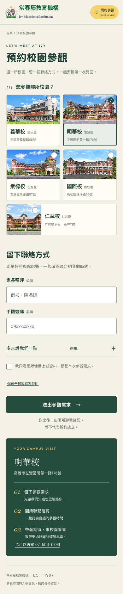
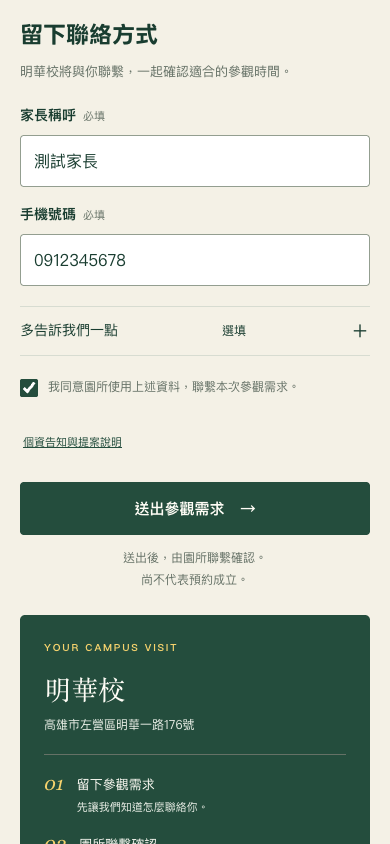
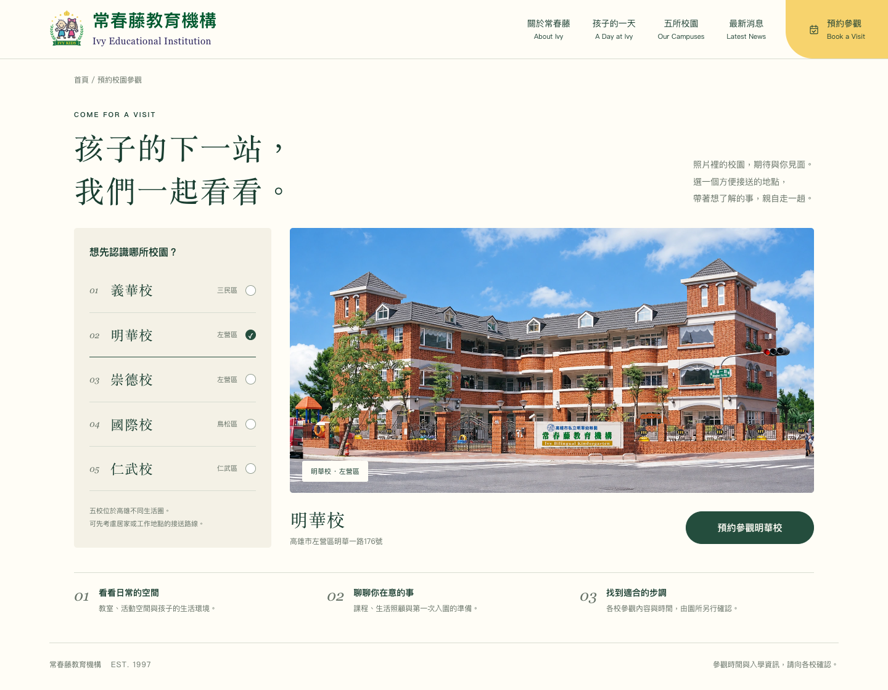
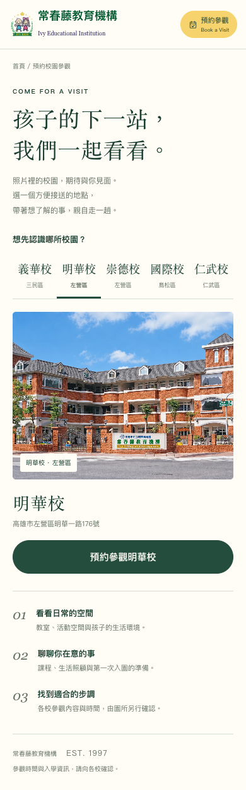
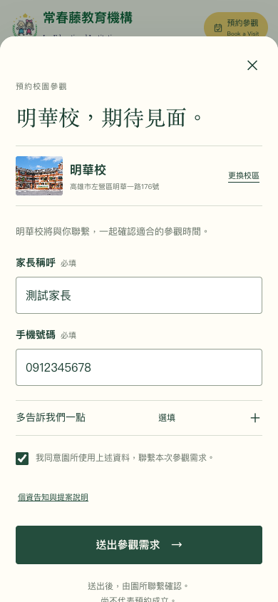

A 一步一步，安心預約
分步引導｜適合第一次認識常春藤的家長



相同品牌、相同五校資訊，不同預約節奏。截圖展示選擇明華校的狀態。
分步引導｜適合第一次認識常春藤的家長



單頁表單｜適合已有意向校區的家長



形象導覽｜延續官網的大照片與留白



獨立 mock-up，尚未整合官網。所有輸入不送出、不儲存；圖片使用現有常春藤素材。手機縮圖為前段畫面，完整流程請開啟互動版。